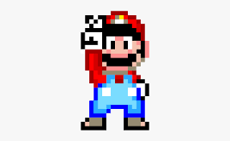

About Me
Hi! My name is Logan, also known as Lobot16 to the internet. I'm always up for a quick chat about anything! I may seem quiet but I have a lot thats on my mind. I am amazing to be around once you get to know me.
Things I like to do
Coding
One of my favorite things to do is coding. I absolutely love solving the types of problems that comes up through programing. Building of from previous work is always a very satisfying part of coding. I am always open to learn new coding languages when I get the chance.
Languages I know:
- Python
- C++
- HTML
- CSS
- Godot
Music
I love to play and listen to music. I am able to play the piano and cello. I also like to play rhythm games. My favorite music genres are Indie and alt rock.
My top 5 artists:
- Will Wood
- Lemon Demon
- AJR
- The Scary Jokes
- Tally Hall
Puzzles
To keep my mind buisy, I like to solve puzzles. Whether it be jigsaws, word puzzles, or logic, I always look for something new. Solving puzzles helps me look at things at new angles and its always satisfying to find the solution to difficult problems.
Pixel Art
I have recently started to get into pixel art. Having the restriction of a small color pallate and having control over individual pixels is what got me into it. I use the program, Aseprite to create my pixel art.

Games
Playing games is how I relax without doing nothing. Playing a game with others, whether it be a card game with family or a video game with friends is always a good time. A good game can focus on story, gameplay, spectical, or have any combination of the three. I dream of one day creating my own game that people will love.
My top 5 games:
- Void Stranger
- Celeste
- Deltarune
- One Shot
- Baba is You
Media
I watch a lot of movies and series in my free time. I love media that has interesting ideas that makes me wanting more about the world it's set in. I especially love animation where there is the freedom to create anything without the limits of the real world.
My top 5 series:
- Pantheon
- Loki
- The Amazing Digital Circus
- Invincible
- Moon Knight